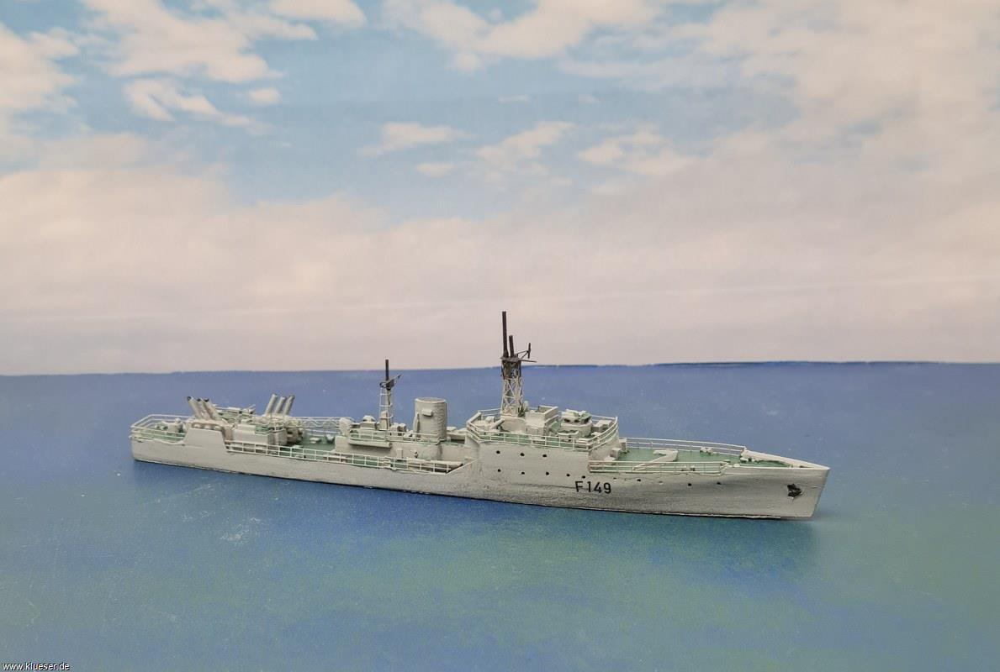

Service History
- Entry into service :
INS Khukri was commissioned into the Indian Navy on September 20, 1958, primarily intended for anti-submarine warfare and patrol duties.
- Major Operations :
INS Khukri's most notable and final operation was in the 1971 Indo-Pak War. The ship was deployed in the Arabian Sea, conducting anti-submarine patrols along the western coast.
On December 9, 1971, it was attacked and sunk by a Pakistani Navy submarine, PNS Hangor.
- Loss in Combat : The sinking of INS Khukri marked a tragic moment in Indian naval history. Out of the 176 crew members on board,
18 officers and 176 sailors lost their lives, including its commanding officer, Captain Mahendra Nath Mulla, who chose to go down with the ship.
Technical Specifications
- Displacement : Approximately 1,200 tons.
- Propulsion : Powered by diesel engines, providing a speed of up to 24 knots (44 km/h).
- Armament :
Armed with a variety of anti-submarine warfare (ASW) equipment, including depth charges, anti-submarine mortars, and light anti-aircraft guns.
- Notable Feature : Designed specifically for anti-submarine warfare, with equipment and armament optimized for hunting and neutralizing submarine threats.
- Sensors and Sonar : Equipped with sonar systems for submarine detection, making it capable of tracking and engaging underwater threats.
- Crew : Carried around 176 personnel, including both officers and enlisted sailors.
Historical Significance
INS Khukri holds a special place in Indian naval history for the courage demonstrated by her crew and the legacy of service to the nation.
The ship’s sacrifice during the 1971 Indo-Pak War became a symbol of bravery and dedication, inspiring subsequent generations. Captain M.N.
Mulla’s decision to remain on board exemplified naval leadership and earned him the Maha Vir Chakra posthumously.
Notable Missions
- 1971 Indo-Pak War Patrol and Engagement: During the war, INS Khukri was assigned to anti-submarine operations
in the Arabian Sea. While conducting patrols, she came under attack from PNS Hangor, a Pakistani Daphne-class submarine.
The submarine fired torpedoes at Khukri, ultimately leading to her sinking. This engagement remains one of the few documented submarine kills during wartime.
- Legacy of Valor: Captain M.N. Mulla’s act of bravery and leadership is one of the most commemorated in Indian naval history. His choice
to go down with his ship and ensure the safety of his crew is remembered with deep respect.
- PMemorial in Diu: In honor of the sacrifices made, a memorial was constructed in Diu with a model of INS Khukri and the names of the crew who perished.